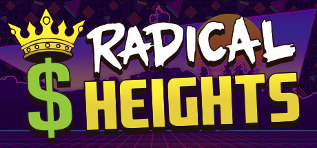
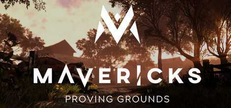
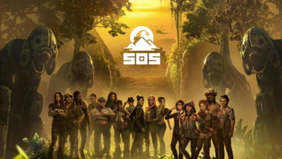
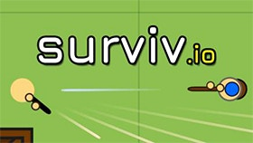
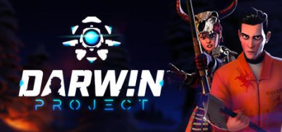
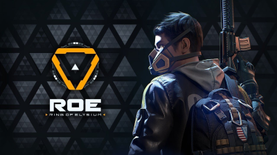

Radical Heights
Release Date: In Early Access
Platform: PC
Being developed by Boss Key Productions this BR offers an arcade type of shooter with an 80's inspired theme. Eliminate other players all while collecting cash and other prizes, riding BMX bikes, and even zip lining.

Mavericks: Proving Grounds
Release Date: ETA 2018
Platform: PC
Mavericks is going to release in 2018 and is going to be one of the biggest battle royal type games yet. There is going to be a game mode in it that involves 400 players at once, this making it different from the rest of the battle royal games. Another cool thing about Mavericks is that you can track players by seeings their muddy footprints that they leave behind. The beta is going release sometime this summer and is going to be a popular game to play.

S.O.S
Release Date: In Early Access
Platform: PC
SOS is a different kind of battle royal game because instead of being the last one standing you have to appeal to the audience as well. For example in SOS there are 16 players that are acting as contestants on a fictional TV show that are released on an island. The island is filled with monsters that the contestants/players have to survive through. The difference about this battle royal game than most is that the viewers on Twitch.tv take part in deciding which items are dropped into the game. The game usually last about 30 mimutes depending on what the viewers want to give the players.

Surviv.io
Playable in development
Platform: PC
This free to play battle royal game is one of the most basic battle royal games here to date. This game is a top-down browser based game that you can play from anywhere you desire if you can access a PC. The rounds in this game only last minutes, but makes it fun, simple, short and to the point. Although it is only a url based game, there are tons of weapons and gear.

The Darwin Project
Release Date:In Early Access
Platform: PC
The Darwin project was first announced at E3 in 2017 and is another battle royal game where if you were the last one standing you win the game. The Darwin project drops you into a frozen wasteland while participating in a dystopian research project. This game also has the ability to track the players you are trying to kill by tracking their footprints in the snow. There is no circle or storm that gets smaller in this game so you have to have great tracking abilities and there are certain items that you can get that track enemies better.

Ring of Elysium
Release Date: In Early Access
Platform: PC
Ring of Elysium is a battle royal type game similar to PUBG , but has more features to the game. For example, the game has real-time weather, underwater exploration, environmental kills, and destructible cover.